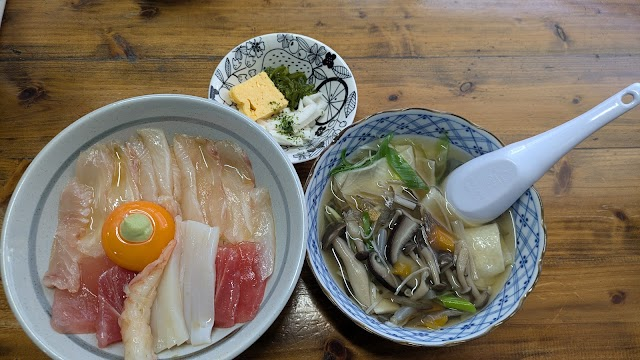
| 営業時間 | 火・水・木・金・土 6:00〜14:00 |
|---|---|
| 定休日 | 月・日曜 |
| 住所 | 青森県八戸市湊町久保４５−１ |
| 予約 | 要確認 — ☎ 0178-35-2295 |
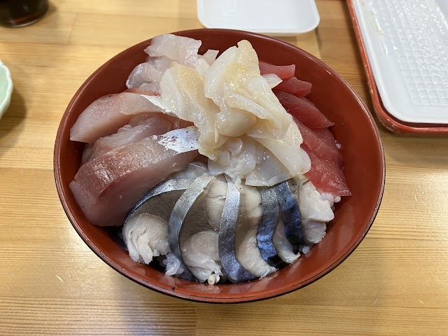
| 営業時間 | 月・火・水・木・金・土 6:00〜10:00 |
|---|---|
| 定休日 | 日曜 |
| 住所 | 青森県八戸市湊町久保３８−１ 魚菜小売市場内 |
| 予約 | 要確認 — ☎ 0178-33-6151 ／ 公式サイト |
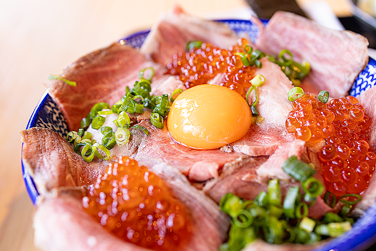
| 営業時間 | 月・火・水・金 8:00〜15:00 ／ 土 8:00〜15:00, 17:00〜21:00 ／ 日 7:00〜15:00 |
|---|---|
| 定休日 | 木曜 |
| 住所 | 青森県八戸市湊町本町４３ |
| 予約 | 要確認 — 公式サイト |
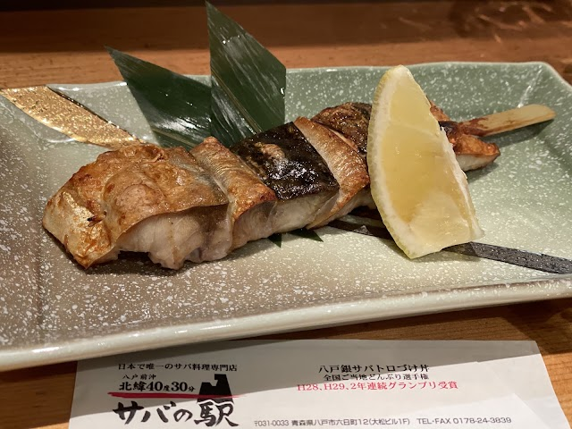
| 営業時間 | 月・火・水・木・金・土 17:00〜22:00 |
|---|---|
| 定休日 | 日曜 |
| 住所 | 青森県八戸市六日町１２ 大松ビル |
| 予約 | 可 — ☎ 0178-24-3839 ／ 公式サイト |
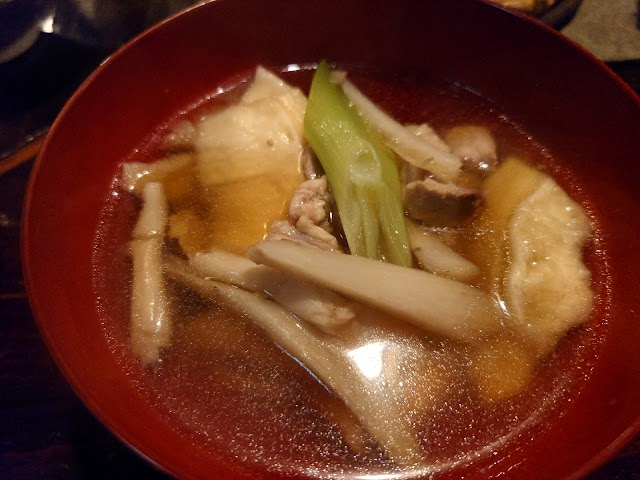
| 営業時間 | 月・火・水・木・金・土 17:00〜23:00 |
|---|---|
| 定休日 | 日曜 |
| 住所 | 青森県八戸市十三日町２８ 花真ビル １階 |
| 予約 | 可 — ☎ 0178-22-1027 |
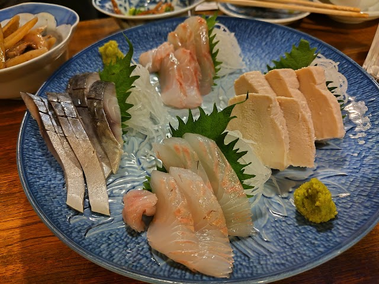
| 営業時間 | 月・火・水・木・金・土 18:00〜23:00 |
|---|---|
| 定休日 | 日曜 |
| 住所 | 青森県八戸市朔日町４ |
| 予約 | 可 — ☎ 0178-24-5052 |
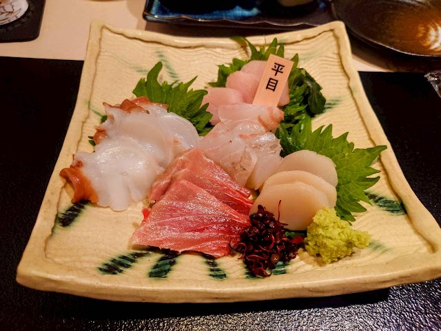
| 営業時間 | 月・火・水・木・金・土 17:00〜22:00 |
|---|---|
| 定休日 | 日曜 |
| 住所 | 青森県八戸市鷹匠小路１８ 金剛ビル ３階 |
| 予約 | 可 — ☎ 0178-44-6787 ／ 公式サイト |
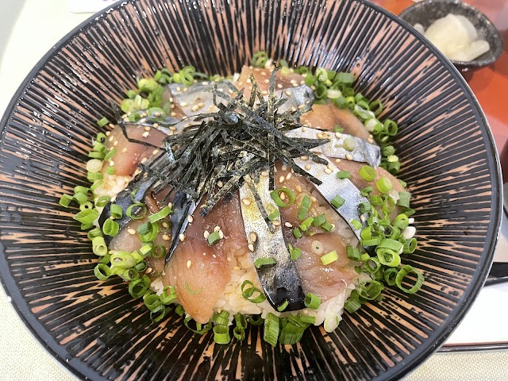
| 営業時間 | 火・水・木・金・土・日 11:00〜15:00, 17:00〜21:00 |
|---|---|
| 定休日 | 月曜 |
| 住所 | 青森県八戸市城下１丁目３−１８ |
| 予約 | 可 — ☎ 0178-51-6767 ／ 公式サイト |
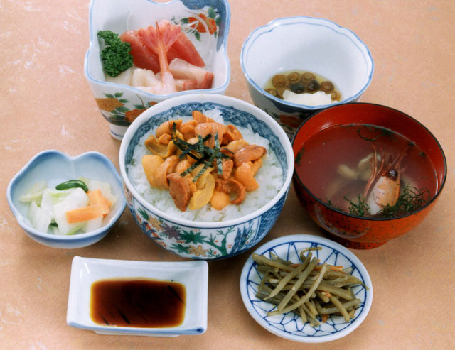
| 営業時間 | 9:00〜19:00(LO18:00) |
|---|---|
| 定休日 | 水曜 |
| 住所 | 青森県八戸市柏崎２丁目１−１０ |
| 予約 | 可 |
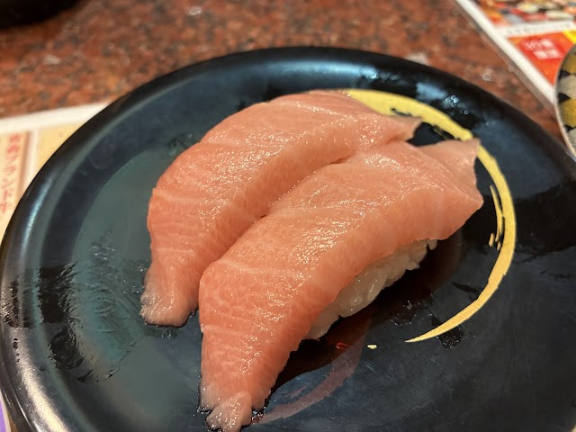
| 営業時間 | 月・火・水・木・金・土・日 10:00〜21:00 |
|---|---|
| 定休日 | なし(要最終確認) |
| 住所 | 青森県八戸市河原木神才２２−２ |
| 予約 | 要確認 — ☎ 0120-501-844 ／ 公式サイト |
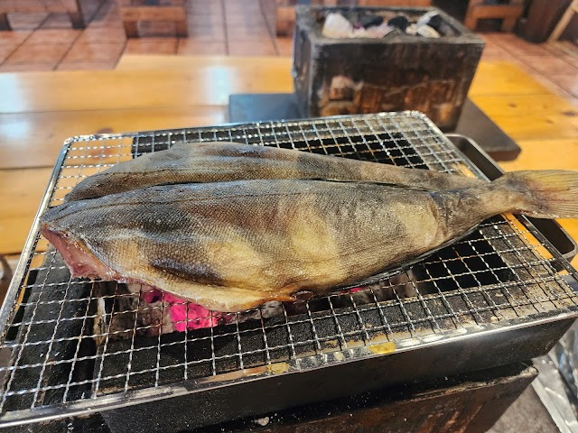
| 営業時間 | 月・火・木・金・土・日 10:00〜17:00 |
|---|---|
| 定休日 | 水曜 |
| 住所 | 青森県八戸市河原木神才２２−２ |
| 予約 | 要確認 — ☎ 0178-29-4451 ／ 公式サイト |
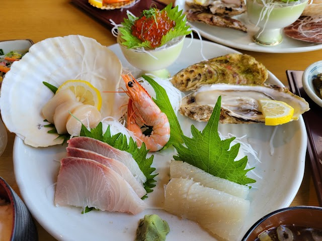
| 営業時間 | 火・水・木・金・土・日 11:00〜14:30 |
|---|---|
| 定休日 | 月曜 |
| 住所 | 青森県八戸市鮫町小舟渡平１０ |
| 予約 | 可 — ☎ 0178-33-3824 ／ 公式サイト |
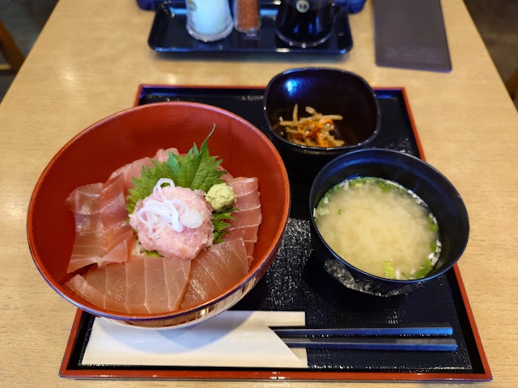
| 営業時間 | 月・火・水・木・金・土・日 6:30〜9:30, 10:30〜20:00 |
|---|---|
| 定休日 | なし(要最終確認) |
| 住所 | 青森県八戸市尻内町館田1−１ ホテルメッツ八戸 3F |
| 予約 | 要確認 — ☎ 0178-70-2712 ／ 公式サイト |
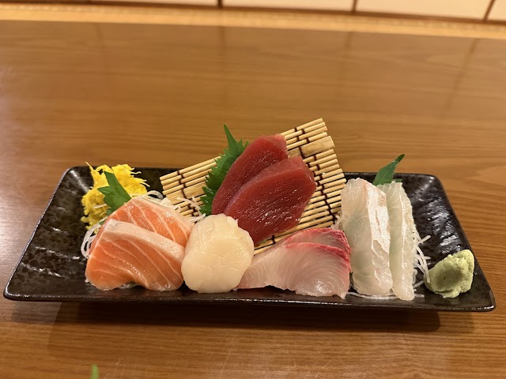
| 営業時間 | 月・火・水・木・金・土 17:00〜23:00 |
|---|---|
| 定休日 | 日曜 |
| 住所 | 青森県八戸市一番町１丁目８−３ らら実駅前 |
| 予約 | 可 — ☎ 0178-70-2722 ／ 公式サイト |
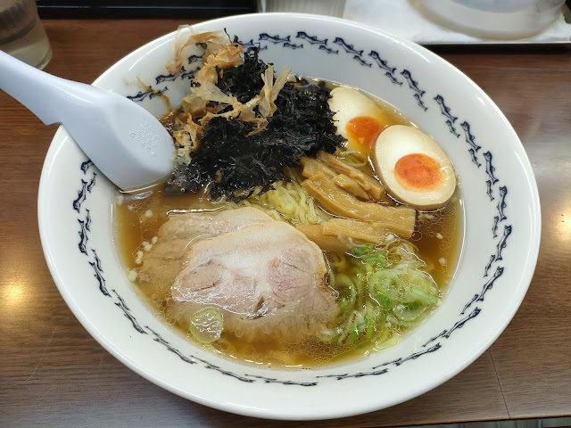
| 営業時間 | 月・火・水・木・金・土・日 11:00〜14:30, 17:00〜0:30 |
|---|---|
| 定休日 | なし(要最終確認) |
| 住所 | 青森県八戸市六日町１０−１ |
| 予約 | 要確認 — ☎ 080-6011-8866 ／ 公式サイト |
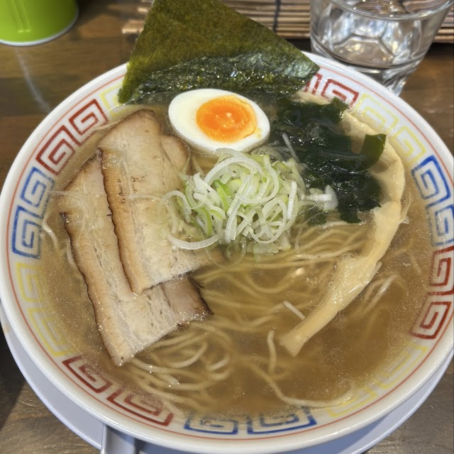
| 営業時間 | 月・木・金・土・日 11:00〜15:00 ／ 水 11:00〜13:30 |
|---|---|
| 定休日 | 火曜 |
| 住所 | 青森県八戸市根城３丁目２４−９ |
| 予約 | 要確認 — 公式サイト |
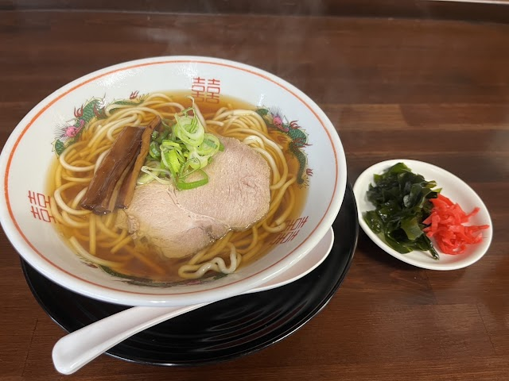
| 営業時間 | 火・水・木・金・土 11:00〜15:00 ／ 日 7:00〜14:00 |
|---|---|
| 定休日 | 月曜 |
| 住所 | 青森県八戸市長苗代下亀子谷地２７−１４ |
| 予約 | 要確認 |
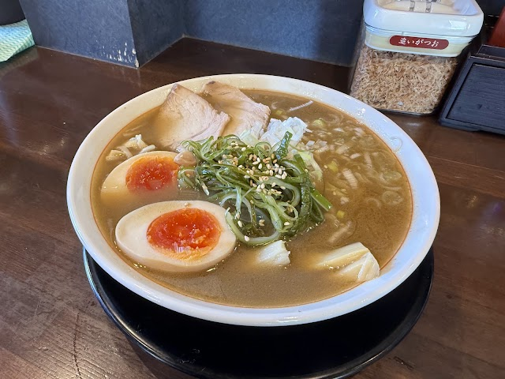
| 営業時間 | 火・水・木・金 11:00〜14:30, 17:00〜20:00 ／ 土・日 6:30〜14:30 |
|---|---|
| 定休日 | 月曜 |
| 住所 | 青森県八戸市白銀町三島下９０−３ |
| 予約 | 要確認 — ☎ 0178-80-7344 |
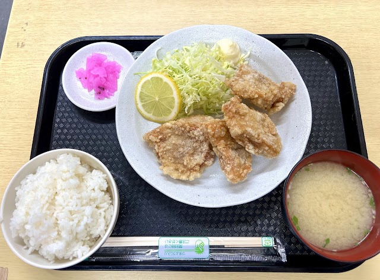
| 営業時間 | 月・火・水・木・金・土・日 11:00〜21:00 |
|---|---|
| 定休日 | なし(要最終確認) |
| 住所 | 青森県八戸市田向２丁目１１−８ |
| 予約 | 要確認 — ☎ 0570-010-300 ／ 公式サイト |
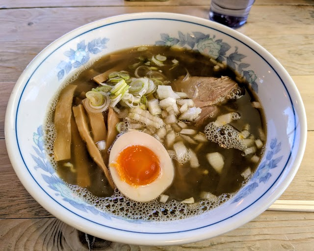
| 営業時間 | 月・火・水・金・土 10:00〜21:40 ／ 木 10:00〜14:00 ／ 日 10:00〜15:00, 17:00〜21:40 |
|---|---|
| 定休日 | なし(要最終確認) |
| 住所 | 青森県八戸市新井田松山下野場７−６ |
| 予約 | 要確認 — ☎ 0178-25-6348 ／ 公式サイト |
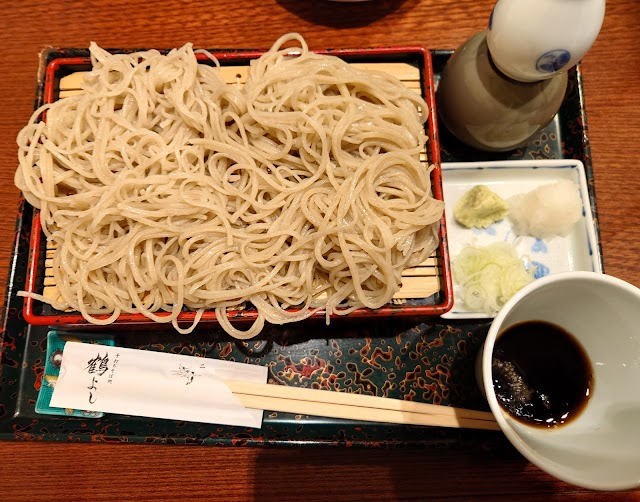
| 営業時間 | 火・水・木・金・土 11:30〜14:30, 17:30〜21:00 ／ 日 11:30〜16:00 |
|---|---|
| 定休日 | 月曜 |
| 住所 | 青森県八戸市十六日町４４ |
| 予約 | 可 — ☎ 0178-43-2020 ／ 公式サイト |
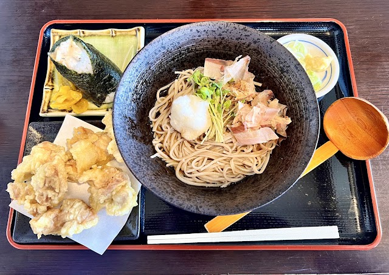
| 営業時間 | 月・火・水・木・日 11:00〜15:30 ／ 金・土 11:00〜15:30, 17:30〜20:30 |
|---|---|
| 定休日 | なし(要最終確認) |
| 住所 | 青森県八戸市下長５丁目１−３ |
| 予約 | 要確認 — ☎ 0178-51-8438 ／ 公式サイト |
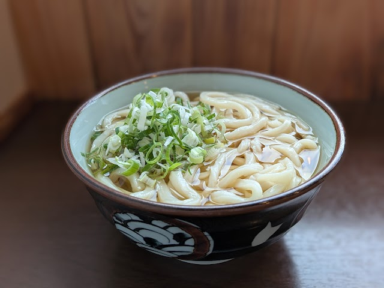
| 営業時間 | 月・木・金 11:00〜15:00 ／ 土・日 8:00〜15:00 |
|---|---|
| 定休日 | 火・水曜 |
| 住所 | 青森県八戸市新井田石仏１−１０ |
| 予約 | 要確認 — ☎ 0178-25-2649 |
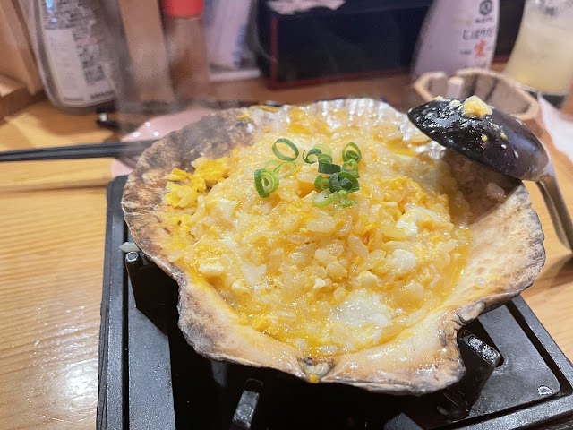
| 営業時間 | 月〜金 17:00〜24:00、土日 16:00〜24:00（L.O.23:30） |
|---|---|
| 定休日 | 無休（臨時休業あり） |
| 住所 | 青森県八戸市三日町２５ みろく横丁 内 |
| 予約 | 要確認 — ☎ 080-1803-3566 ／ 公式サイト |
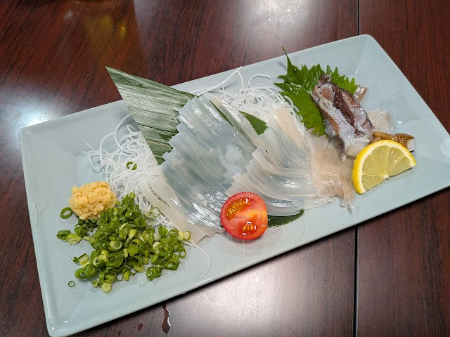
| 営業時間 | 月・火・水・木・金 18:00〜23:00 ／ 土 17:00〜23:00 |
|---|---|
| 定休日 | 日曜 |
| 住所 | 青森県八戸市六日町２２ 光進ビル 第二 |
| 予約 | 可 — ☎ 0178-38-5540 ／ 公式サイト |
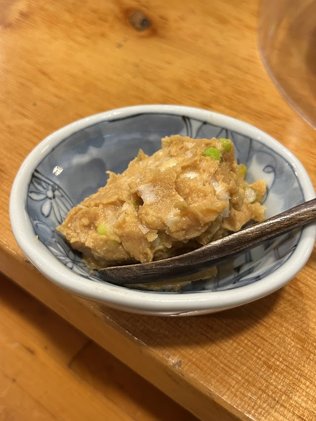
| 営業時間 | 火・水・木・金・土 18:30〜23:00 |
|---|---|
| 定休日 | 月・日曜 |
| 住所 | 青森県八戸市長横町１８ |
| 予約 | 可 |
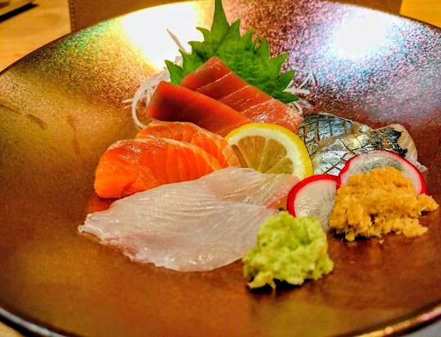
| 営業時間 | 火・水・木・金・土・日 18:00〜0:00 |
|---|---|
| 定休日 | 月曜 |
| 住所 | 青森県八戸市六日町１３ なかやビル 2階 |
| 予約 | 可 — ☎ 050-5384-6652 ／ 公式サイト |
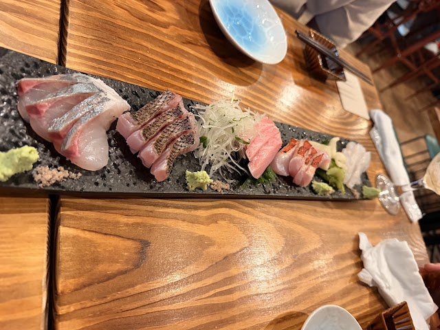
| 営業時間 | 月・火・水・木 17:30〜23:00 ／ 金・土 17:30〜0:00 |
|---|---|
| 定休日 | 日曜 |
| 住所 | 青森県八戸市三日町１ |
| 予約 | 要確認 — ☎ 0178-43-5626 ／ 公式サイト |
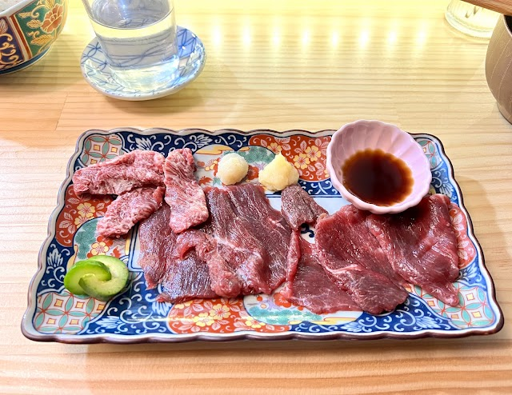
| 営業時間 | 月・火・水・木・金・土 17:00〜23:00 |
|---|---|
| 定休日 | 日曜 |
| 住所 | 青森県八戸市岩泉町１１ |
| 予約 | 要確認 — ☎ 080-7656-0836 ／ 公式サイト |
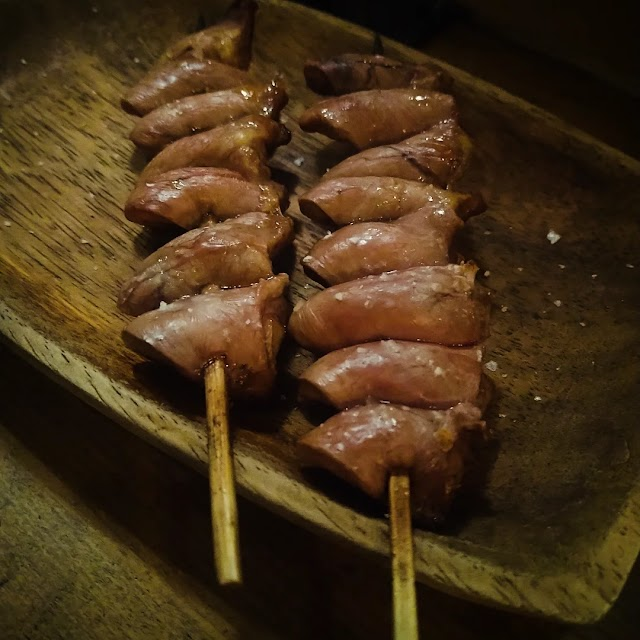
| 営業時間 | 月・火・水・木・金・土 18:00〜2:00 |
|---|---|
| 定休日 | 日曜 |
| 住所 | 青森県八戸市三日町３８ 1階 |
| 予約 | 可 — ☎ 0178-20-9835 ／ 公式サイト |
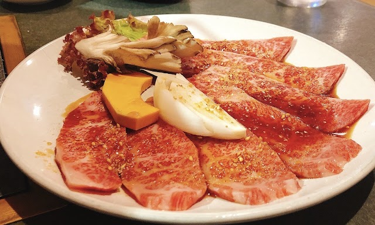
| 営業時間 | 月・木・金・土・日 17:00〜22:30 |
|---|---|
| 定休日 | 火・水曜 |
| 住所 | 青森県八戸市小中野７丁目１−８ |
| 予約 | 可 — ☎ 0178-22-1842 ／ 公式サイト |
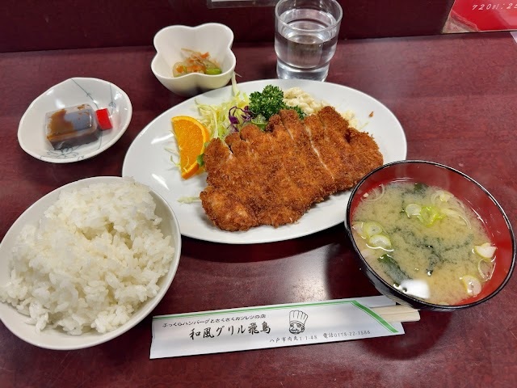
| 営業時間 | 月・火・水・木・金・土 11:30〜14:00, 18:00〜20:30 |
|---|---|
| 定休日 | 日曜 |
| 住所 | 青森県八戸市内丸１丁目１−４８ |
| 予約 | 要確認 — ☎ 0178-22-1588 |
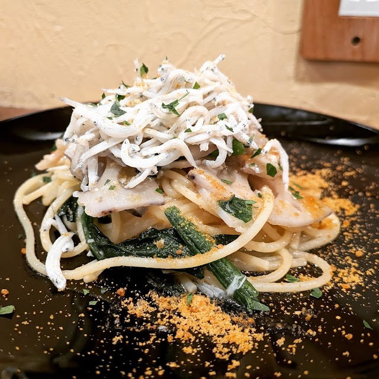
| 営業時間 | 月・火・水・木・金・土 11:30〜14:00, 18:00〜23:00 ／ 日 17:00〜22:00 |
|---|---|
| 定休日 | なし(要最終確認) |
| 住所 | 青森県八戸市十三日町５ 2f |
| 予約 | 可 — ☎ 0178-38-9485 ／ 公式サイト |
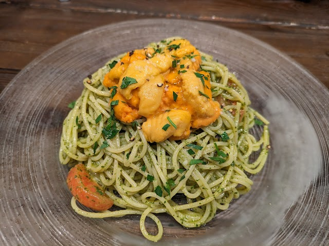
| 営業時間 | 月・火・水・木・金 11:30〜14:15, 18:30〜21:30 ／ 土 18:00〜22:00 |
|---|---|
| 定休日 | 日曜 |
| 住所 | 青森県八戸市長横町１２ ゆりのきビル １Ｆ―３ |
| 予約 | 可 — ☎ 0178-80-7835 ／ 公式サイト |
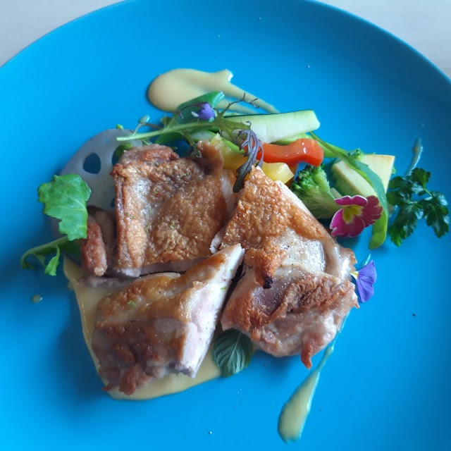
| 営業時間 | 火・水・木・金・土・日 18:00〜22:00 |
|---|---|
| 定休日 | 月曜 |
| 住所 | 青森県八戸市鷹匠小路１−１ |
| 予約 | 可 — ☎ 0178-38-8922 |
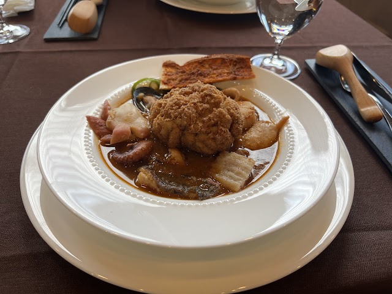
| 営業時間 | 月 17:00〜21:00 ／ 火・水・木・金・土 11:30〜14:00, 17:00〜21:00 |
|---|---|
| 定休日 | 日曜 |
| 住所 | 青森県八戸市類家１丁目１−１ |
| 予約 | 可 — ☎ 0178-22-7638 ／ 公式サイト |
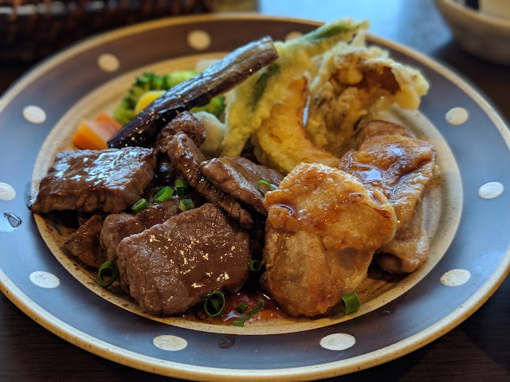
| 営業時間 | 月・火・木・金・日 11:30〜21:00 ／ 土 11:30〜20:00 |
|---|---|
| 定休日 | 水曜 |
| 住所 | 青森県八戸市下長１丁目３−２ |
| 予約 | 可 — ☎ 0178-20-5525 |
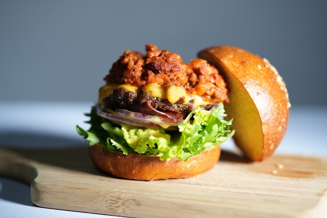
| 営業時間 | 火・水・木・金・土・日 11:00〜16:00 |
|---|---|
| 定休日 | 月曜 |
| 住所 | 青森県八戸市柏崎２丁目１０−８ |
| 予約 | 可 — ☎ 0178-38-1812 ／ 公式サイト |
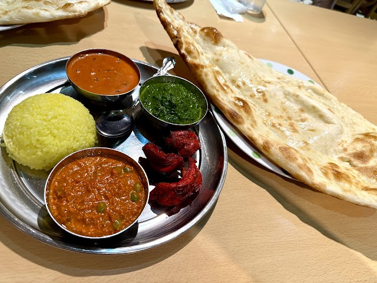
| 営業時間 | 月・火・水・木・金・土・日 11:00〜21:00 |
|---|---|
| 定休日 | なし(要最終確認) |
| 住所 | 青森県八戸市江陽２丁目１４−１ |
| 予約 | 可 — ☎ 0178-47-1288 |
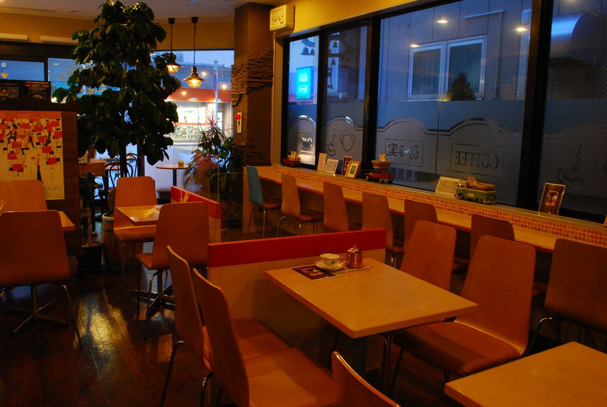
| 営業時間 | 月・火・水・木・金・土・日 10:00〜18:30 |
|---|---|
| 定休日 | なし(要最終確認) |
| 住所 | 青森県八戸市三日町１３ 地下一階 |
| 予約 | 要確認 — ☎ 0178-44-1151 ／ 公式サイト |
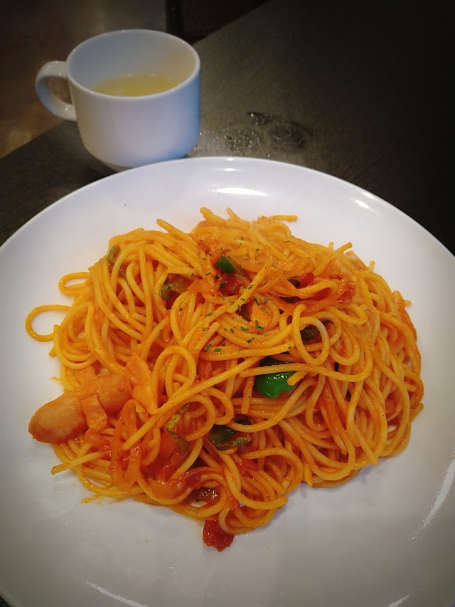
| 営業時間 | 月・火・木・金 7:00〜10:00, 11:30〜20:00 ／ 水 7:00〜10:00, 11:30〜17:00 ／ 土 11:30〜20:00 |
|---|---|
| 定休日 | 日曜 |
| 住所 | 青森県八戸市六日町３４ 大嶋屋ビル 1階 |
| 予約 | 要確認 — 公式サイト |
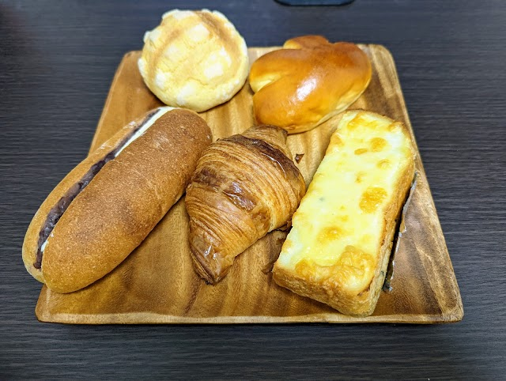
| 営業時間 | 火・水・木 10:00〜17:00 |
|---|---|
| 定休日 | 月・金・土・日曜 |
| 住所 | 青森県八戸市北白山台４丁目５−５ |
| 予約 | 要確認 — ☎ 0178-51-6569 ／ 公式サイト |
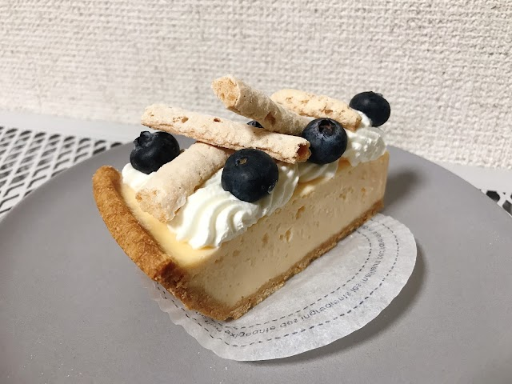
| 営業時間 | 月・火・木・金・土・日 8:30〜18:00 |
|---|---|
| 定休日 | 水曜 |
| 住所 | 青森県八戸市根城７丁目１−２６ |
| 予約 | 要確認 — ☎ 0178-51-6618 ／ 公式サイト |
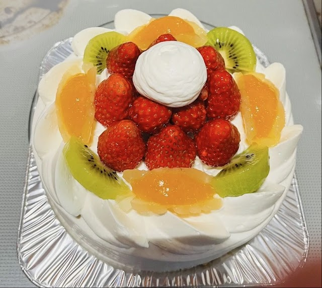
| 営業時間 | 月・火・水・金・土・日 10:00〜19:00 |
|---|---|
| 定休日 | 木曜 |
| 住所 | 青森県八戸市下長４丁目２−２５ |
| 予約 | 要確認 — ☎ 0178-28-9532 ／ 公式サイト |
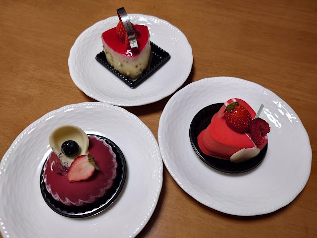
| 営業時間 | 火・水・木・金・土・日 10:00〜18:00 |
|---|---|
| 定休日 | 月曜 |
| 住所 | 青森県八戸市類家４丁目１８−１３ |
| 予約 | 要確認 — ☎ 0178-44-0094 ／ 公式サイト |
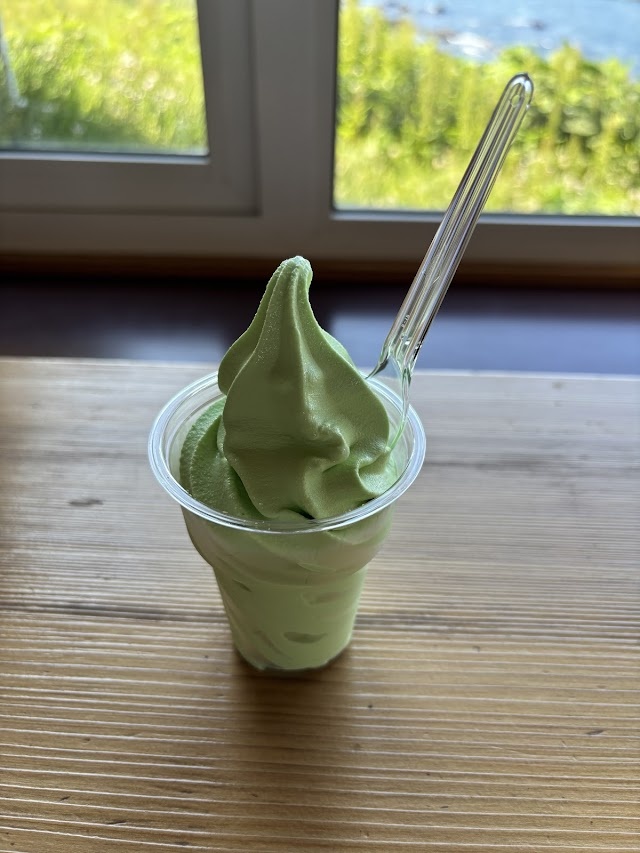
| 営業時間 | 月・火・水・木・金・土・日 9:00〜17:00 |
|---|---|
| 定休日 | なし(要最終確認) |
| 住所 | 青森県八戸市鮫町先祖ケ久保１０−３ |
| 予約 | 要確認 — ☎ 0178-33-2222 |
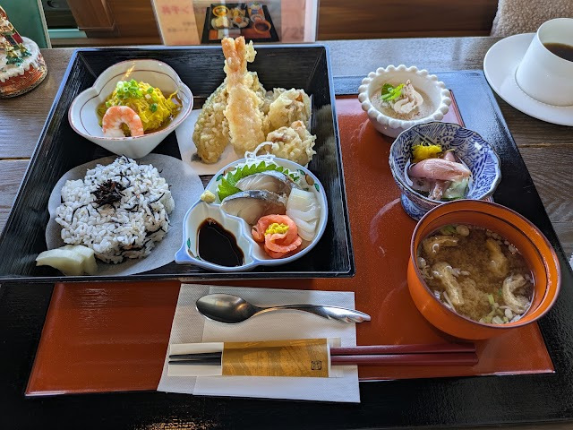
| 営業時間 | 月・火・金・土・日 11:00〜16:00 |
|---|---|
| 定休日 | 水・木曜 |
| 住所 | 青森県八戸市鮫町下盲久保２５−１１７ |
| 予約 | 要確認 — ☎ 0178-33-0134 ／ 公式サイト |
本ガイドは個人利用目的で作成。掲載情報は2026年8月時点の調査に基づく。写真出典: Google Maps投稿写真(©各投稿者/Google)。